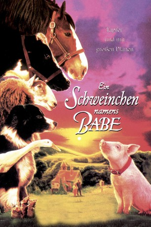
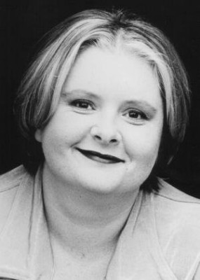
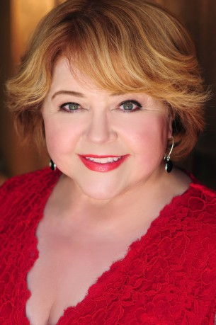
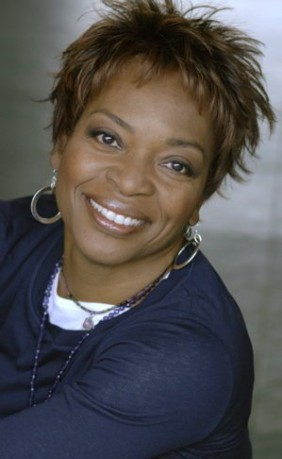

#11553 Ein Schweinchen namens Babe
Alternativ: Babe (Englischer Titel)
Auszeichnungen: 1 Oscars gewonnen für 6 Oscars nominiert 1 GoldenGlobes gewonnen
 
 IMDB-Wertung: 6.8 / 10
IMDB-Wertung: 6.8 / 10  Tomatometer: 97
Tomatometer: 97  Metascore: 83
Metascore: 83 
Das verwaiste Schweinchen Babe kommt auf den Hof des Bauerns Arthur Hoggett. Dort wird sie von den anderen Tieren aufgenommen. Die neue Ziehmutter Fly, ein Border-Collie, bringt Babe das Handwerk des Schafehütens bei. Babe wird so gut, dass Arthur sie an einem Schafshunde-Wettbewerb anmeldet.
Jahr: 1995
Dauer: 91 Minuten
FSK: 0
Land: Australien Studio: CIC VideoTonspuren:
Untertitel: Deutsch,
Auflösung: 1080p (1920x1040) Größe: 6553 MB
Genre: Drama, Komödie, Familie
Regisseur: Chris Noonan
Drehbuch: Dick King-Smith, George Miller, Chris Noonan
Soundtrack: Nigel Westlake
Darsteller:
- Christine Cavanaugh als Babe
 Miriam Margolyes als Fly
Miriam Margolyes als Fly Hugo Weaving als Rex
Hugo Weaving als Rex Miriam Flynn als Maa
Miriam Flynn als Maa Russi Taylor als Duchess the Cat
Russi Taylor als Duchess the Cat- Evelyn Krape als Old Ewe
- Charles Bartlett als Cow
- Paul Livingston als Rooster
 Roscoe Lee Browne als Narrator
Roscoe Lee Browne als Narrator James Cromwell als Farmer Arthur H. Hoggett
James Cromwell als Farmer Arthur H. Hoggett-  Magda Szubanski als Esme Hoggett
- Paul Goddard als The Hoggetts' Son-in-Law
- Brittany Byrnes als The Hoggetts' Granddaughter
- Janet Foye als Country Woman
- Marshall Napier als Chairman of Judges
- Ross Bagley als Puppy
 Debi Derryberry als Puppy
Debi Derryberry als Puppy- Jazz Raycole als Puppy
 Courtland Mead als Puppy
Courtland Mead als Puppy- Kevin Jamal Woods als Puppy
- Kimberly Bailey als Sheep
-  Patrika Darbo als Sheep
- Maeve Germaine als Sheep
- Carlyle King als Sheep
-  Tina Lifford als Sheep
- Mary Linda Phillips als Sheep
- Jacqueline Brennan als Mouse
 Doug Burch als Other Character Voices
Doug Burch als Other Character Voices- John Erwin als TV Commentator
 Daamen J. Krall als
Daamen J. Krall als  Neil Ross als
Neil Ross als - Kay E. Kuter als Man Sitting in Crowd at Sheep Trial (uncredited)
- Danny Mann als Ferdinand
- Michael Edward-Stevens als Horse
- Zoe Burton als The Hoggetts' Daughter
- Wade Hayward als The Hoggets' Grandson
- Mary Acres als Valda
- Pamela Hawken als Country Woman
- Karen Gough als Country Woman
- David Webb als The Vet
- Hec Macmillan als Lion's Club Man
- Ken Gregory als Lion's Club Man
- Nicholas Lidstone als Sheep Rustler
- Trevor Read als Electrical Linesman
- Nicholas Blake als Electrical Linesman
- Matthew Long als Sheepdog Trial Officer
- John Doyle als TV Commentator
- Mike Harris als TV Commentator
- Gemini Barnett als Puppy
- Rachel Davey als Puppy
Datei: X:\2-Dilogie(N-Z)\Schweinchen Babe\Schweinchen namens Babe, Ein (1995, FSK0, 1920x1040).mkv seit 24.07.2019
Festplatte: HD Collection-2(A-Z)-3(A-M)
 Alle Filme aus Gruppe '2-Dilogie(N-Z)\Schweinchen Babe'
Alle Filme aus Gruppe '2-Dilogie(N-Z)\Schweinchen Babe'